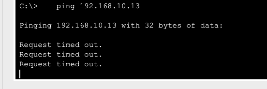

📋 Problem Definition
VLAN configuration errors are the most common L2 problems in modern networks. Incorrect VLAN assignments, trunk port errors create security vulnerabilities.
🎯 Cisco Packet Tracer:
Open vlan_problem.pkt file. Test VLAN scenarios with 3 switch + 6 PC topology.
🖼️ Faulty Network Topology (Example Diagram)
PCs in the network cannot communicate with each other despite being in the same VLAN. For example, the ping attempt between PC0 (192.168.10.11) and PC4 (192.168.10.13) in the SALES VLAN fails as shown below:
🌐 Network Topology Diagram
╔══════════════════════════════════════════════════════════════╗
║ VLAN Configuration Error ║
╚══════════════════════════════════════════════════════════════╝
PC1 PC2
VLAN 10 VLAN 10
.10.11 .10.12
│ │
│ │
┌───▼───────────┐ ┌─────────▼───┐
│ Fa0/1 │ │ Fa0/2 │
│ │ │ │
│ Switch-A │ │ Switch-B │
│ │ │ │
│ Gi0/1 │ │ Gi0/1 │
└───────┬───────┘ └─────┬───────┘
│ │
└─────TRUNK─────────┘
(ERROR: VLAN allow list)
❌ Problem: VLAN 10 NOT in allowed list
on Switch-A Gi0/1 trunk port!
Switch-A# show interfaces trunk
Port Mode Encapsulation Status Native vlan
Gi0/1 on 802.1q trunking 1
Port Vlans allowed on trunk
Gi0/1 1-4094
Port Vlans allowed and active in management domain
Gi0/1 1 <-- VLAN 10 missing here!
Port Vlans in spanning tree forwarding state and not pruned
Gi0/1 1

Figure 1: Failed ping test between PCs in the same VLAN
Potential Causes:
- Misconfiguration of allowed VLAN lists in trunk connections between switches.
Packet Tracer Simulation File:
You can download the Packet Tracer file containing a simulation of this problem here.
🎮 Interactive VLAN Configuration Animation
Click to test: Watch VLAN isolation, trunk tagging and access port configurations live.
🔍 Main Problem Types
1. Access Port VLAN Errors
- Assigning PCs to wrong VLANs
- Default VLAN 1 security risk
- Port mode configuration errors
2. Trunk Port Problems
- Native VLAN mismatch
- 802.1Q encapsulation errors
- Allowed VLAN list mistakes
🔧 Detection Commands
Switch# show vlan brief
VLAN Name Status Ports
---- -------------------- --------- ---------------------
1 default active Fa0/1, Fa0/2
10 SALES active Fa0/5, Fa0/6
20 ENGINEERING active Fa0/7, Fa0/8
Switch# show interfaces trunk
Port Mode Encapsulation Status Native vlan
Gi0/1 on 802.1q trunking 1
✅ Solution Steps
1. Creating VLANs
Switch(config)# vlan 10
Switch(config-vlan)# name SALES
Switch(config)# vlan 20
Switch(config-vlan)# name ENGINEERING
2. Access Port Configuration
Switch(config)# interface fa0/5
Switch(config-if)# switchport mode access
Switch(config-if)# switchport access vlan 10
3. Trunk Port Configuration
Switch(config)# interface gi0/1
Switch(config-if)# switchport mode trunk
Switch(config-if)# switchport trunk allowed vlan 10,20
🎯 Packet Tracer Lab
📁 Lab Files:
- vlan_problem.pkt - Initial (contains errors)
- vlan_solution.pkt - Fixed version
Lab Objectives:
- Detect VLAN configuration errors
- Fix access and trunk ports
- Test PC-to-PC connectivity
- Verify VLAN isolation
⚠️ Important Notes
- Don't use VLAN 1 - Security risk
- Check Native VLAN consistency
- Caution in production - Test first
- Keep documentation updated